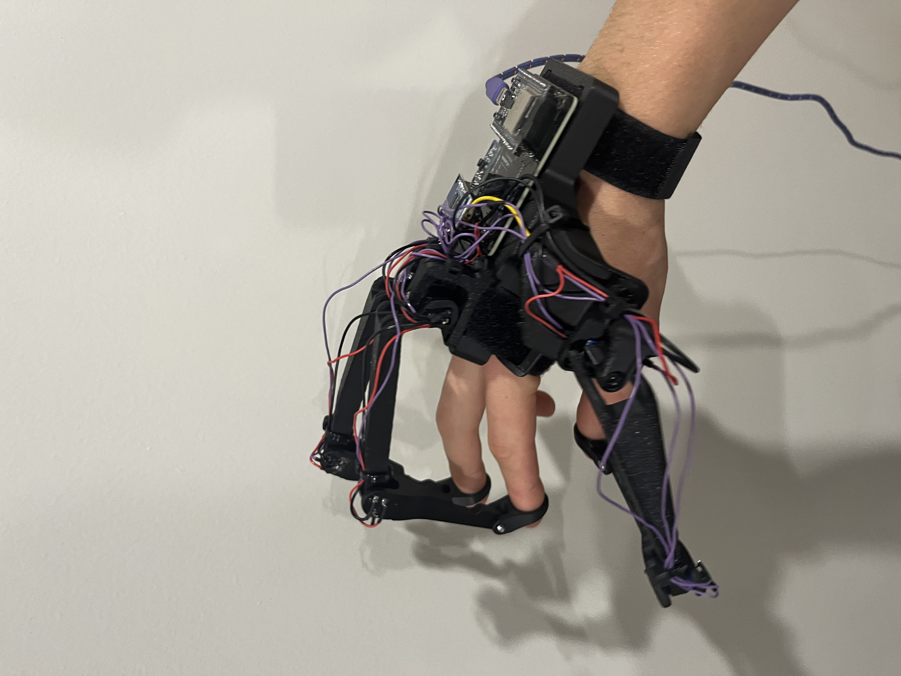
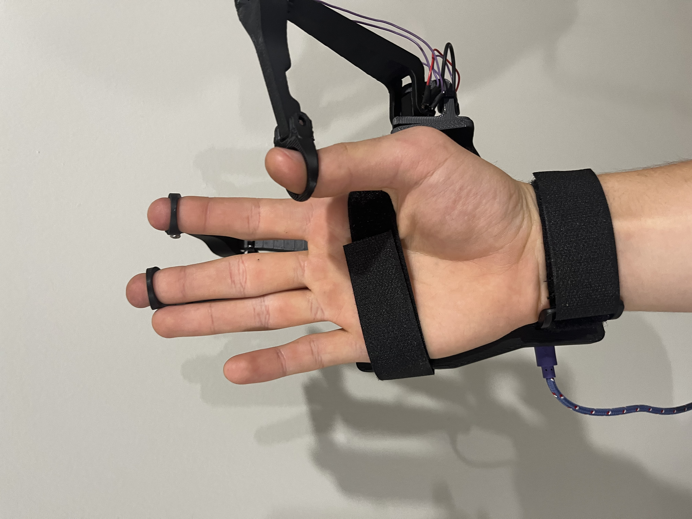
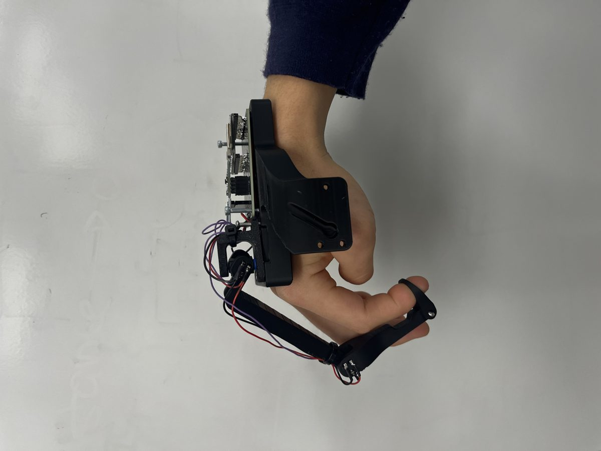
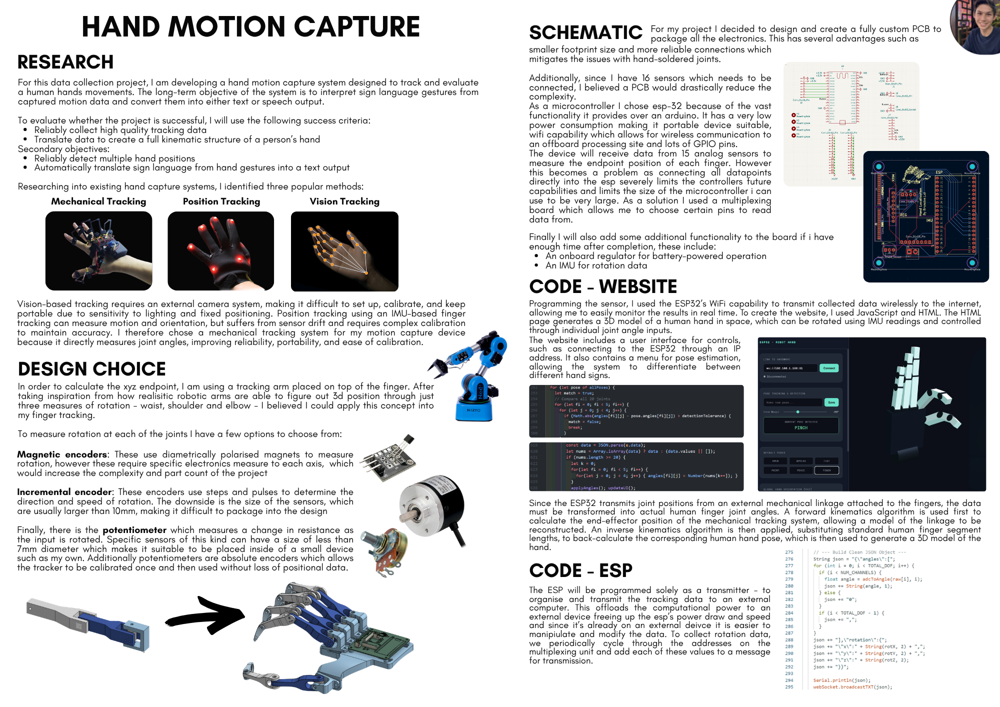
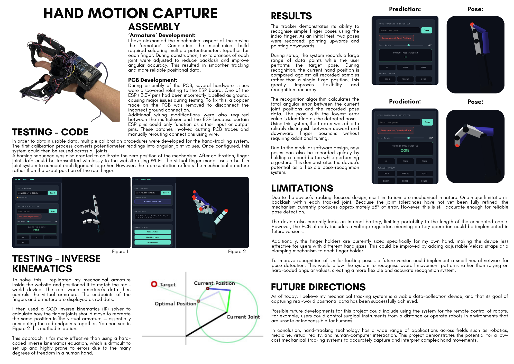

Sensing & kinematics
Mechanical hand motion capture
A low-cost potentiometer exoskeleton for sign-language interpretation - 15 channels of joint data reconstructed into a live 3D hand model.

A low-cost glove that measures finger joints directly with potentiometers, then rebuilds a live 3D hand. Built for sign-language interpretation.
My role
- Designed the mechanical linkage and the custom PCB.
- Wrote the firmware and the browser 3D model.
- Built calibration and the pose recognition.
- 15joint channels
- ESP32wireless to browser
- +/- 3 degjoint error
- 2 of 2poses told apart


Why mechanical
I compared three ways to track a hand.
- Camera: needs a rig and good lighting.
- IMU glove: drifts, and needs constant recalibration.
- Mechanical linkage: measures the angle directly. No drift, simple calibration.
I chose the linkage. Sub-7 mm potentiometers fit inside the fingers and give an absolute reading.
The electronics
- A custom PCB holds an ESP32 and multiplexers, so 15 sensors need very few pins.
- The ESP32 only reads sensors and sends the numbers over Wi-Fi. A computer does the maths.
- Two PCB faults were fixed by hand: a mislabelled supply pin, and pins that were input-only.
From numbers to a hand
Two stages turn raw readings into a hand pose.
- Forward kinematics turns the linkage angles into fingertip positions.
- Inverse kinematics (CCD) finds the human finger angles that reach those points.
The browser draws the result live as a 3D hand.
Calibration and testing
- Angle calibration converts resistance to degrees, once per joint type.
- Homing sets the zero position.
- Test: the tracker reliably told a finger pointing up from pointing down. New poses are added by holding a record button.


Limits and next steps
- Joint backlash gives about 3 degrees of error.
- No battery yet, and it only fits my hand.
- Next: a small neural network to recognise movements, then sign-to-text.